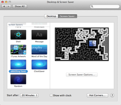

aMAZEing Screensaver Logo
aMAZEing Screensaver
aMAZEing Screensaver a port of the screensaver module "maze" found in xlockmore to OS X Mountain Lion. This screensaver generates random mazes and tries to find a way through the maze by using a depth first search algorithm. The solving process is animated on screen.
Screenshots
aMAZEing Saver in System Preferences.app
Download
The latest version 2.0.0 (released august 2012) is ready for Moutain Lion.
Download the precompiled Screensaver from GitHub

Alternatively you can grab the sourcecode of the project as a zip or tar package:

License
aMAZEing Saver is published under a BSD style license.